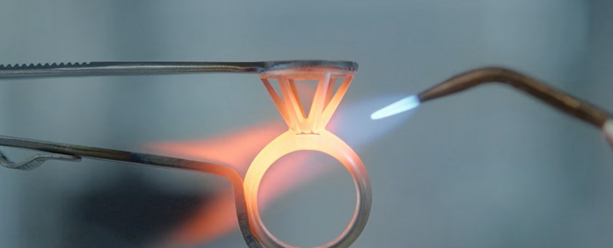
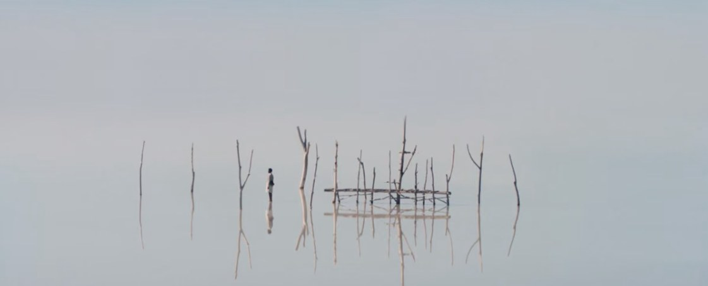
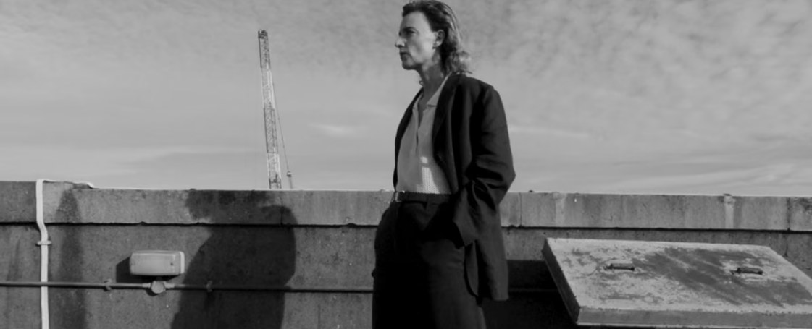
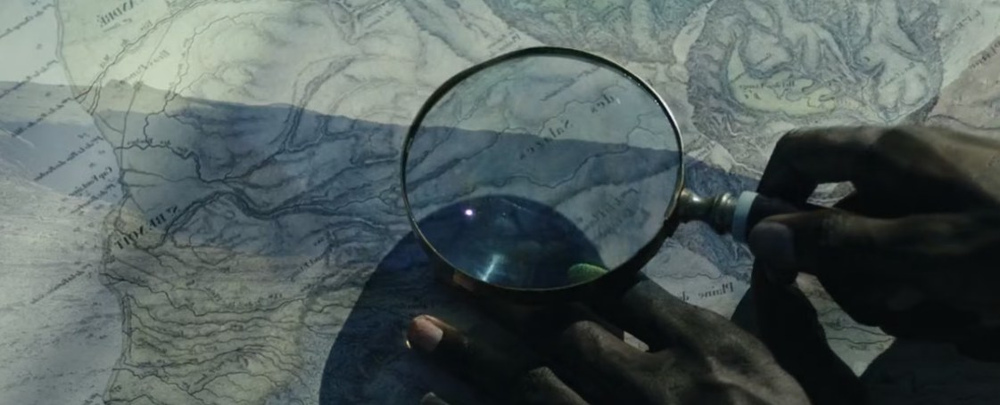
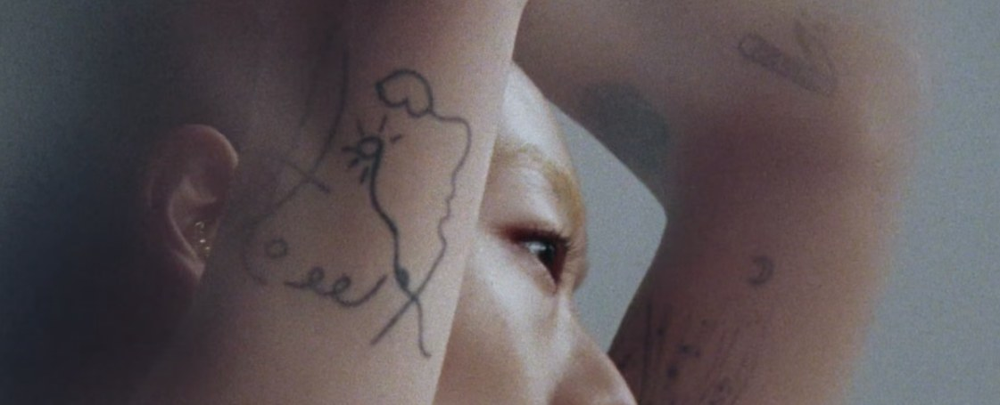

A site he runs himself
Leo Marcus scores fashion campaigns. His new site puts the films first and lets him add the next one without us.
ClientLeo Marcus, Helical Sound
MadeSite, film player, editor
Brief to launchAbout 3 weeks
Launch13 Nov 2026

Tiffany & Co., IconFrames from the films Leo scored. The work leads; the site gets out of the way.
The brief
Big client names, then the film. Three columns: client, project, tags. A pinned header and footer on one page, and symbols he likes (| → ↳).
Most of all, Leo had to be able to add a film, change credits and reorder the list himself, without a developer.


Round oneDirections shown side by side. Leo liked the helix and the index list.
20 OctLeo says yes
26 OctKick-off call
30 OctRound one
5 NovRound two
13 NovLaunch


Round twoRed on white, the film centred. [Add final screenshots after launch.]
What we made
- DesignTwo rounds of directions, then one look built out
- PlayerOur own film player instead of a Vimeo box
- PagesOne page per film, clean links, its own share image
- EditorLeo adds and edits films in Cargo himself
- HandoverDone when Leo has added a film on his own
After launch
[Link to the live site.]
[The first film Leo added himself, and the date.]
[A line from Leo, only if he offers one and says we can use it.]
Credits and stills from helical-sound.com, used with Leo’s site build. Check with Leo before this page goes anywhere.